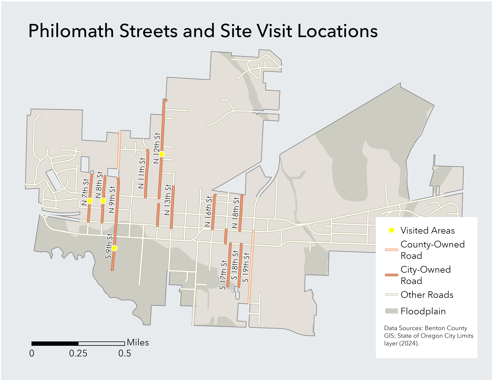

GIS · URBAN TRANSPORTATION · COMMUNITY
Philomath Streets and Site Visit Locations.

approach
Mapped site visits, road ownership, underdeveloped streets, and floodplains to support transportation planning in Philomath.
skills
GIS data integration · transportation mapping · cartographic design